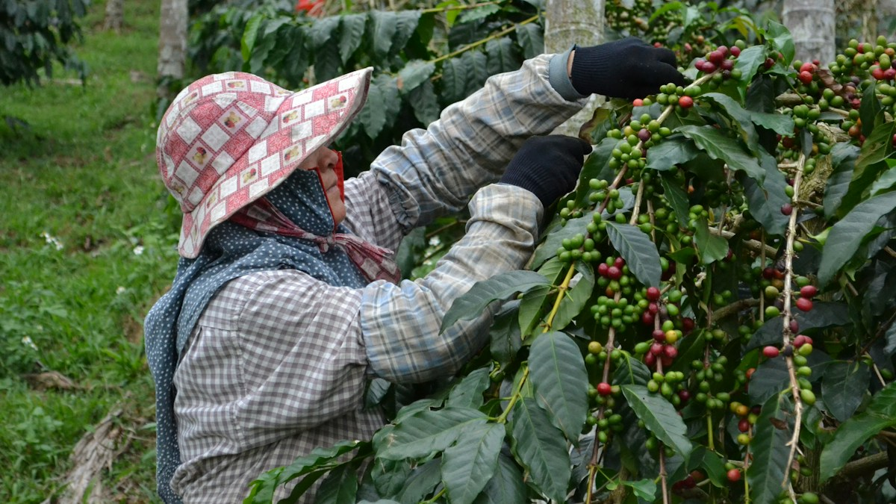

About SOROTI WebWorks
Grounded in Soroti City East, building dependable websites, connected software tools, and digital skills across Eastern Uganda.
Engineering Practical Software in Eastern Uganda
SOROTI WebWorks is led by Twinamasiko Jusper from Plot 14, Gweri Road in Central Ward, Soroti City East. We partner with local enterprises, agricultural cooperatives, schools, and community organisations that need clear websites and structured database systems without expensive bloat.
Too many templates built outside East Africa rely on heavy media and assume uninterrupted fibre connections. Because rural Eastern Uganda experiences variable mobile data speeds, our development standard emphasizes lightweight pages, strict input validation, clear typography, and database security enforced by PostgreSQL Row Level Security (RLS).

Core Service Areas
- Business & Institutional Websites: Mobile-first brochure websites, landing pages, redesigns, and Figma UI prototypes built for clinics, hotels, hardware shops, law firms, and NGOs.
- E-Commerce, Portals & Mobile Money: Online product catalogs, MTN MoMo & Airtel Money gateways, school admission/results portals, booking systems, and SACCO dashboards.
- Local SEO, Hosting & Monthly Care: Google Business Profile verification,
.ug/.comdomain & email setup, cloud backups, and 3G/4G speed optimization.
Live Delivery & R&D Pipeline
Partnering with Soroti schools, cooperatives, and SMEs at Plot 14, Gweri Road to scope practical digital systems.
Studio & Founder Profile
 Founder & Lead Engineer
Founder & Lead Engineer
- Business
- SOROTI WebWorks
- Lead
- Twinamasiko Jusper
- Location
- Plot 14, Gweri Road, Central Ward, Soroti City East
- Service Region
- Soroti, Teso & Eastern Uganda
- Contact
- tjusper02@gmail.com
Who We Are & Research Focus
Combining practical web engineering with applied mobile machine learning and geospatial research in Eastern Uganda.
Motto
Pursuing Digital Excellence & Practical Innovation
Vision
A leading web design, e-commerce, and digital systems agency powering thriving businesses and climate-smart agricultural software across Eastern Uganda.
Mission
To deliver fast, mobile-first websites, Mobile Money payment flows, custom web portals, and local SEO systems structured in clear, accessible packages.
Core Values
- Respect & Integrity
- Practical Professionalism
- Client & Community First
- Offline-First Innovativeness
- Database Security

Kahawa Connect
Final-Year Engineering Research Topic
EUDR Compliance & Offline MLWhy Academic Research Matters to Our Client Work
Alongside building websites for local organisations, Twinamasiko Jusper leads research on Kahawa Connect — an offline-first mobile and machine learning application designed to help Ugandan smallholder coffee farmers comply with the EU Deforestation Regulation (EUDR), diagnose leaf and berry diseases on-device, and verify fair district prices.
Engineering Kahawa Connect required solving hard reliability problems: storing geospatial polygons locally when networks drop, synchronizing conflict-free queues to PostgreSQL, and presenting complex compliance checks in an interface a rural user can operate comfortably on an entry-level phone. We bring that exact discipline to every web application SOROTI WebWorks ships.
Explore Completed Projects Discuss a Project